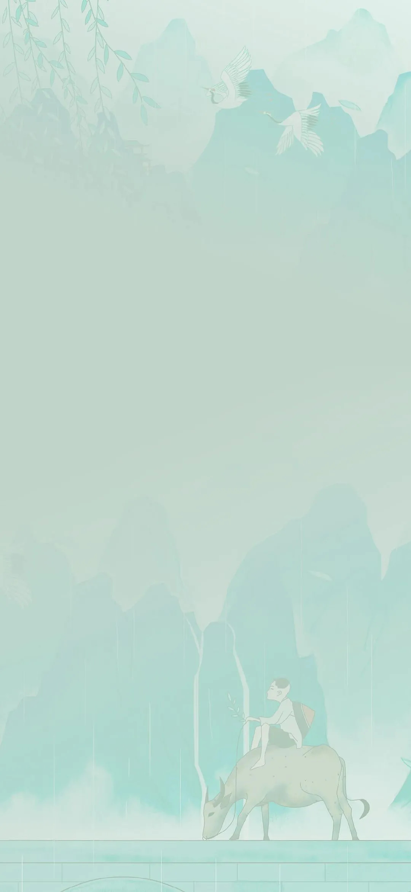

《通信软件开发与应用》课程结业报告
一、做的什么
本次课程结业考核我做的是一个关于我个人一些记忆和爱好类的个人信息网站，
内容包括童年记忆、儿时回忆、兴趣爱好、喜欢的书籍分享、诗书赏析共六个网页。
二、开发过程
本次实验我选择的是以MDB模板为基础的静态网站设计。采用VS Code软件制作完成。Material Design 是谷歌于2014年推出用于媲美苹果的视觉设计规范。
以Bootstrap 为基础，同时遵循 MD 规范的靓丽 CSS 框架也不少，构建了许多直接使用的组件。其中以 MDBootstrap 为最佳。
基本框架确定好后，我就根据自己想要的内容在网上搜索自己想要的素材。在把素材放进去的过程中在模板的基础上进行代码的修改，使其达到自己预期的效果，比如对一些颜色文字和图片的修改，再对网站设置导航条使其能进行页面的跳转等。
想要让自己的内容得到充分的体现就需要选择合适的颜色等要素，让自己想要表现的内容更加地突出。再根据自己想要添加的东西，从老师给的学习资料中选择合适的代码进行修改。在完成修改之后对网站进行托管。
三、遇到的问题
1、在刚开始时对于页面的制作并不熟悉，对各种标签都比较陌生。加上对于一些标签属性和代码的定义理解得不够透彻，大部分大需要在网上查找相关资料再一步步的尝试去加以理解然后再将其改成符合自身风格的页面布局，所以修改得有些吃力。
2、在进行文件的导入时，有时候文件放置的位置不对，导致文件不能正常读取，内容显示不出来。
3、在进行图片放置时有时会因为格式问题显示不出来，或者因为图片的大小而显示不完整，也会出现图片的放置导致网站的排版发生变化，变得不整齐。
4、在进行网站托管时遇到很多问题，有时候按照教程一步步做但是最后托管上去的网站还是点进去会显示404，或者什么内容显示不出来。
5、在进行网站的颜色调节时，有时候颜色并不是自己想要的，对于一些大小比例的修改也不是很熟悉，改了之后会导致排版发生改变。
6、在后期对部分内容不满意想改好一点时，由于对网页整体布局相关代码设置记不清，导致老是越改越错，每次更改都需要重新梳理一遍各个页面的布局思路。
四、如何解决
首先是对于有些代码理解不到位的时候，会自行去百度看看解释或者CSDN上寻找解决办法，但是有时候百度出来的也不太靠谱，好在老师的教学网里有对各种代码的详细解释以及各种模板，看了之后虽然不能百分百理解，但是也大概能看懂。
对于素材文件的放置问题，经过对同学的询问之后才得知对于素材的引用时对于路径的描述一定要详细，不然一些文件加载不出来。还有比如图片的格式也要注意。
在进行放置素材导致网站排版发生变化时，我删除了部分代码并且在老师的教学网站里找一些自己需要的代码进行修改加入，这样就能保持网站的排版美观
对于网站托管时导致出现错误问题，其实也不是很懂为是什么会这样，只能一遍又一遍地去进行尝试，后面突然就行了，不过我也没咋搞懂为啥，反正试了很多种方法。
五、未解决的问题
对于一些框架的代码实现还不是很熟悉，css的调整还是有些迷糊，一些在网上和老师的教学网里找的模板和代码没能理解透彻，只是机械的套用。
在图片放置的位置不对或者修改调整大小时导致排版出现问题时，不太会修改，容易导致整个的排版混乱。一些css文件的应用时有时不能正常起作用。
对各种标签以及属性的应用还是不太熟悉，老师容易搞忘。对于网页托管的详细操作还是不太会，按照网上教学做的还是会出错。
六、总结
本次课程结业作业是让我们做一个自选主题且不少于5个页面的网站，在做作业过程中我更加深入地理解了各种代码具体在网页制作中如何起作用，代码与代码之间要如何应用才能不发生冲突，加深了我对代码的理解。同时，css样式多种多样，在合理地运用可以减少我们代码的数量，提高我们的效率，而且还能让网页更加地美观，
在网页的制作中有时会出现各种各样的问题，有时候在网上找不到解决办法时可以多多请教别人，能加快我们的完成效率。这次制作网页，让我对于网页制作的详细过程有了更加深刻的理解，一个网页的制作要考虑各种各样的因素，颜色图片的选择，尺寸的选择等都会影响美观，需要我们注意各个方面。但是在自己认真做出来以后看见自己的成果还是会有些愉悦感。这次制作让我对于网页的制作有了更大的兴趣。
不过我的美感好像有些差，对于网页的制作没啥思路，大多是根据别人的样例来做，这是也我需要补足的地方。